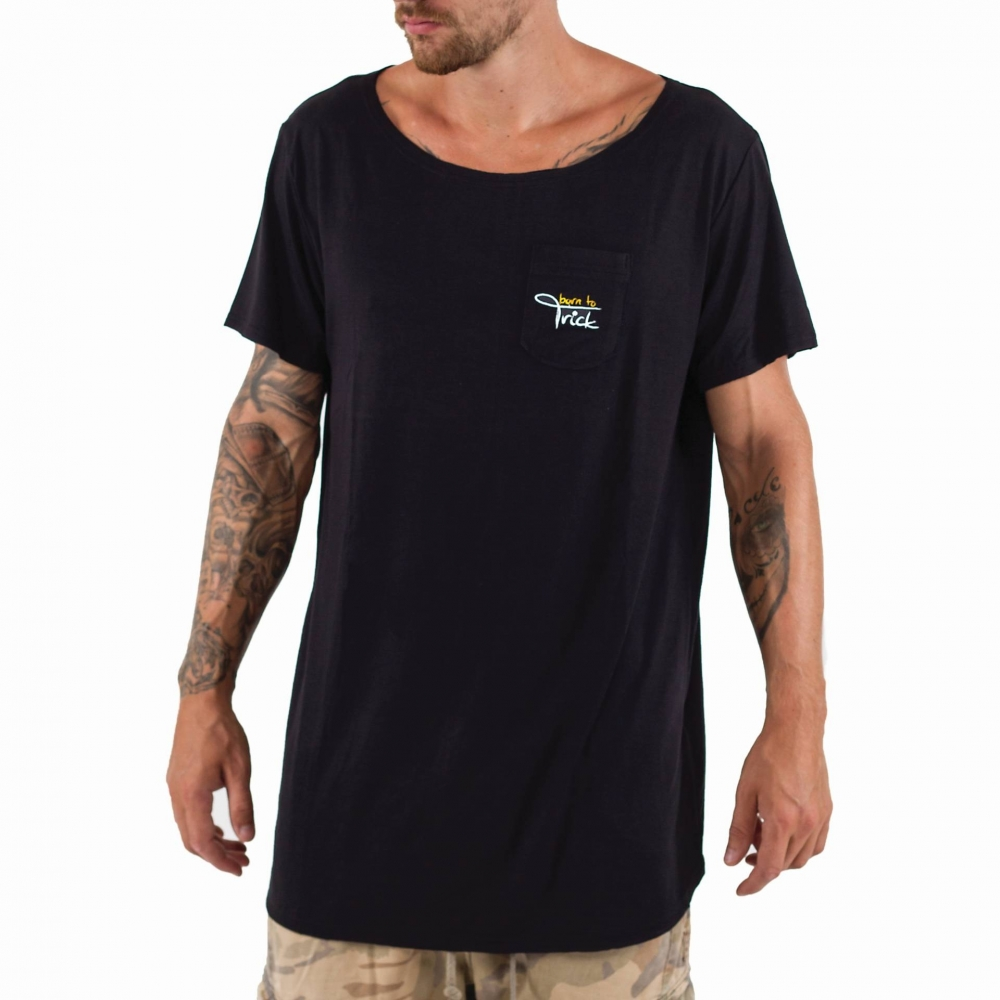
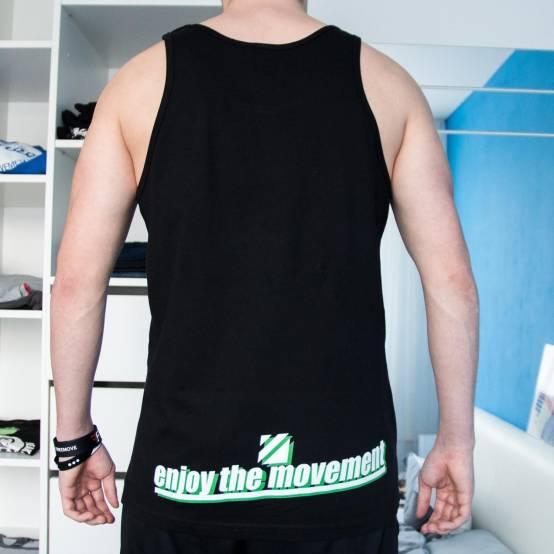
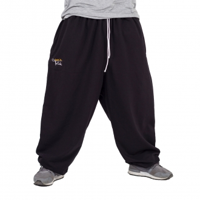
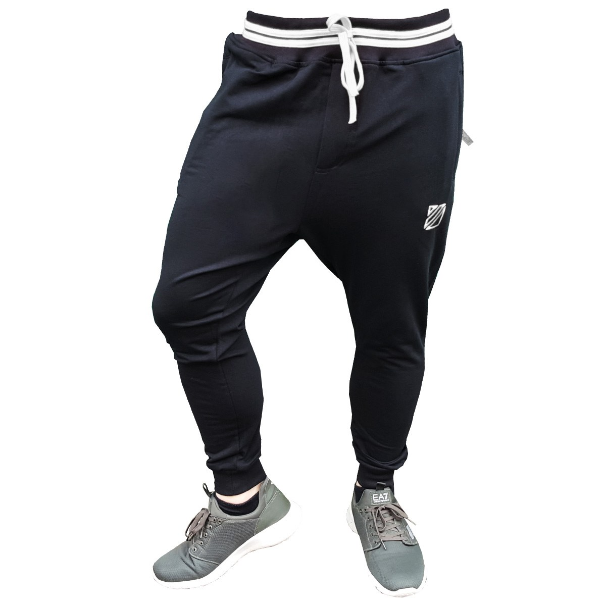

Tričká a tielka
Tričko split tail
Tričko je vhodné na tréning alebo bežné nosenie. Born to Trick Logo je vyšité na prednom prsnom vačku. Zozadu je tričko stredom zošité a chvost trička je nastrihnutý. Tričko je volné a má chladivý pocit na pokožke. Neprekáža v pohybe a je vhodné na parkour či freerunning.
Dostupné vo veľkostiach: XS S M L XL
Pohlavie: unisex
Farba: čierna,sivá
Materiál: 95% viskóza, 5% elastan
Dostupné v e-shopoch borntotrick.sk
Tielko green parkour
Toto tielko sa skvele hodí na letné tréningy parkouru, ale tiež aj na tréningy v telocvični. Tielko má vpredu uprostred zeleno-biely nápis "PARKOUR" a zozadu vytlačené logo ETM a pod ním nápis "Enjoy the Movement".
Dostupné vo veľkostiach: M L XL
Pohlavie: muži
Farba: čierna
Materiál: 100% bavlna
Dostupné v e-shopoch enjoythemovement.cz
Tepláky
Široké parkour tepláky
Štvrtá verzia širokých teplákov na športové aktivity i bežné nosenie. Tepláky na parkour sú svojim zložením veľmi ľahké a tvarom vynikajú pri pohybe. Po bokoch majú dve vrecká na zips, zadný vačok s vyšívkou EXPLORE THE ADVENTURE a vnútorné/schované vrecko na zips pre MP3 alebo iné drobné predmety. Na prednej strane pod pravým vačkom sa nachádza vyšité Born To Trick logo. Tepláky majú v páse gumu a bielu šnúrku na pevné utiahnutie. Guma sa taktiež nachádza na spodku nohavíc, aby sa tepláky pri nosení neničili o zem.
Dostupné vo veľkostiach: 2XL 3XL 4XL
Pohlavie: unisex
Farba: čierna, olivová, sivá, modrá, červená
Materiál: 95% viskóza, 5% elastan
Dostupné v e-shopoch borntotrick.sk
Tepláky soul
Detské a pánske tepláky Soul sú pre tréning parkouru ako stvorené. Vďaka prímesi elastanu sú veľmi pružné a zaručujú neobmedzený pohyb. V ľahkom a priedušný materiál sa budete cítiť vždy dobre. Zúžené nohavice sú zakončené pružným lemovaním pre bezpečný pohyb nielen pri tréningu. Rovnako tak sú tepláky pružné v páse a na ich stiahnutie poslúži šnúrka. Dve praktické postranné vrecká so zipsom, vrecko s výšivkou na zadnej strane.
Dostupné vo veľkostiach: XS S M L XL
Pohlavie: unisex
Farba: čierna
Materiál: 95% viskóza, 5% elastan
Dostupné v e-shopoch enjoythemovement.cz